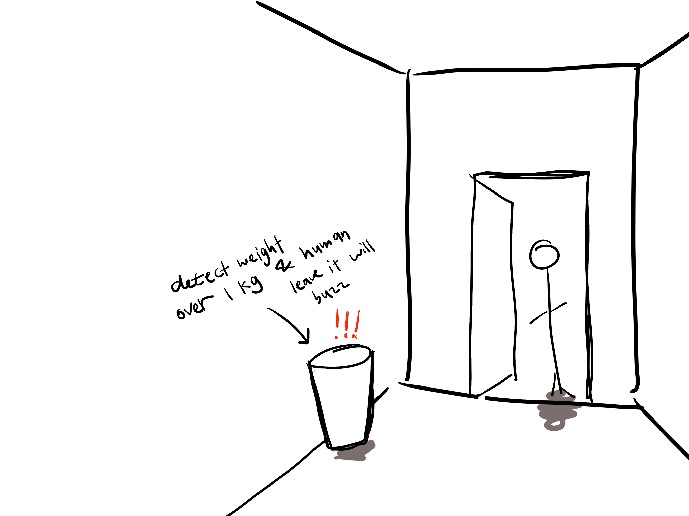

Fish playground
The principle of this device is to use a light-sensing Photoresistor, set the light value in
Arduino, and let the
Servomotor rotate when the light source is lost. You can also set the degree of rotation of the motor in the
software,
such as 45 degrees or others.
.gif)
Led drawings
This activity is about how to use LED lights to draw the patterns you want. First, we drew some
ideas on paper, and then
prepared the required Components. They are Control board, Breadboard, USB cable, LED matrix, 74HC595, R220
resister and
Jumpers.
.gif)

Sketch ideas
Regarding life changes: When there is too much garbage at home, I often forget to take it away
when I go out, resulting
in a lot of garbage accumulating at home every time. So I want to make a special trash can to remind me that
I need to
throw away garbage. The main principle is to sense the smell and weight of the garbage to determine whether
it needs to
be thrown away. And connect a sensor outside the door to sense whether people go out. If the door is opened
+ people go
out + the garbage is too smelly or the garbage is too heavy, it will make a sound to remind me that I need
to throw it
away.
